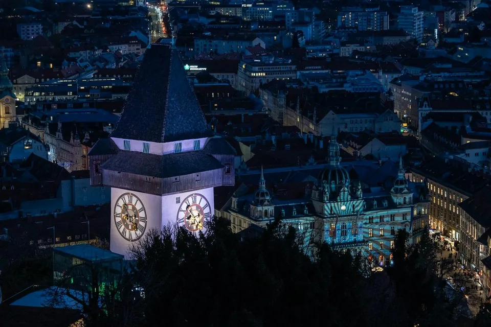
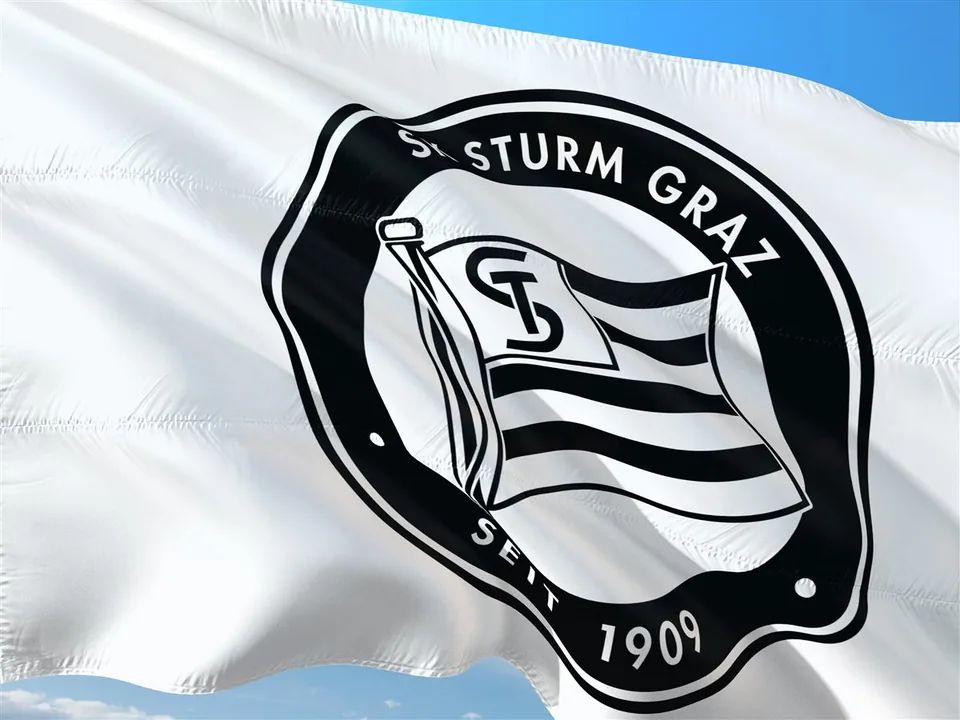
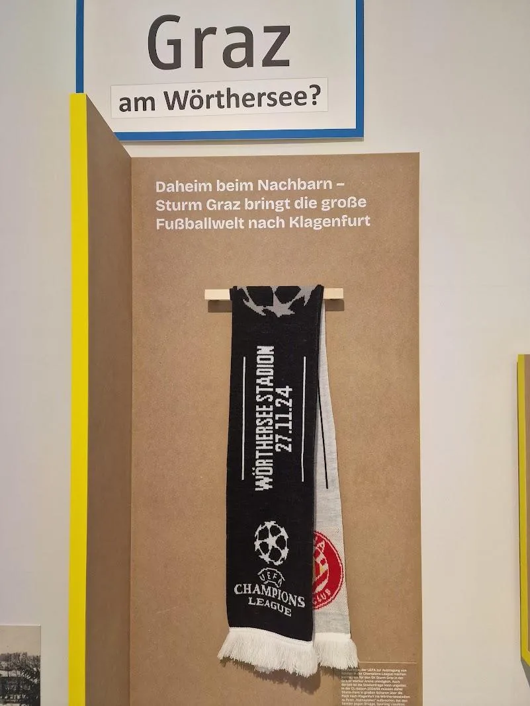
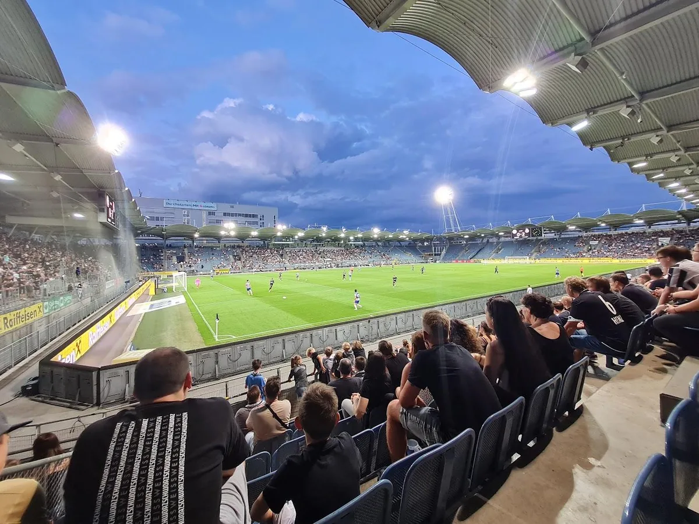

Was ein Verein wie Sturm für seine Stadt bedeutet, ist messbar in Euro und Arbeitsplätzen, sichtbar in Spenden und sozialen Projekten, in Europacup-Abenden und im Namen der Stadt auf Bildschirmen quer durch den Kontinent. In der Debatte geht dabei oft unter, dass Fußball ein eigener Wirtschaftszweig ist, mit Arbeitsplätzen, Steuern und Erlösen aus dem Ausland, und dass ein Europacup-Klub seiner Stadt Werbewert verschafft.
Abgeklebt, durchgestrichen, Schulterschluss
Der Streit um Stadion und Geld schwelt seit Jahren. Im Oktober 2026 hat ihn eine Sparmaßnahme zu einem offenen Konflikt zwischen der Stadt und allen drei Grazer Profiklubs gemacht. Das Neueste zuerst:
Liveticker Stand: 22. Oktober 2026
- 22. OktoberEine Woche nach dem Protest in Bournemouth gewinnt Sturm in Liebenau gegen Olympique Marseille 1:0, der erste Sieg dieser Europa-League-Saison. Der Sieg bringt 450.000 Euro UEFA-Prämie152.
- 21. OktoberSchulterschluss: Sturm, GAK und die 99ers stellen in einem gemeinsamen Statement ihre Zahlungen an die Stadt dem Sponsoring gegenüber und verlangen Gespräche mit der Politik. Sturm-Präsident Jauk wünscht sich einen runden Tisch statt einer Debatte über die Medien142, 145.
- 18. OktoberBeim Stadtderby steht auf der Bande „Graz“ durchgestrichen, in Schwarz-Weiß und in Rot-Weiß. Auf dem Rasen bleiben Sturm und GAK Rivalen, im Protest gegen die Sparpläne stehen sie zusammen147.
- 17. OktoberDer städtische Sponsor bestätigt den Ausstieg offiziell. Frauen-, Nachwuchs- und Special-Needs-Teams werden weiter unterstützt, aber nur noch mit 85 Prozent des bisherigen Umfangs. Die Namenssponsorings bei Volleyball, Handball und Basketball laufen weiter148.
- 16. OktoberDer Rechnungshof legt seinen Bericht zu den Grazer Finanzen vor. Er rät zu Kürzungen, auch beim Sponsoring, und zu weitgehend kostendeckenden Mieten in den städtischen Sportstätten149.
- 15. OktoberSturm klebt beim Europa-League-Spiel in Bournemouth den Schriftzug „Graz“ im Wappen ab3. Präsident Christian Jauk: Nicht die Stadt fördere Sturm, sondern Sturm fördere die Stadt4.
- OktoberBekannt wird: Mit Ende der Saison 2026/27 endet das städtische Sponsoring der Grazer Profiklubs. Sturm verliert rund 500.000 Euro pro Jahr, der GAK 300.000 Euro, die 99ers 200.000 Euro. Grund ist ein Sparpaket der Stadt1, 2, 142. Zugleich sieht der Entwurf des Landesbudgets 2027 rund zehn Prozent weniger Geld für den Sport vor2.


Drei Bürgermeister, ein Stadion, 29 Jahre ohne großen Umbau
Wie es so weit kommen konnte
Wer verstehen will, warum Sturm so heftig reagiert, muss weit zurückgehen, lange vor die jetzige Stadtregierung.
Bei der Vergabe der EM 2008 im Dezember 2002 ging Graz leer aus106, 105. Schon 2001 hatte das Sportministerium im Parlament festgehalten, Liebenau sei voraussichtlich nicht auf 30.000 Plätze erweiterbar, und weder Land noch Stadt hätten ein Projekt für ein neues Stadion vorgelegt103. Klagenfurt bekam dagegen ein neues Stadion, und als die Stadt ihren Anteil nicht aufbringen konnte, sprang das Land Kärnten ein107. Genau dort musste Sturm 2024/25 seine Champions-League-Heimspiele austragen77.
In Graz ließen unter Bürgermeister Siegfried Nagl nötige Adaptierungen auf sich warten, Sturms Pläne für ein „Tor zur Stadt“ wurden verworfen, und bis heute hält der Verein als Mieter nicht einmal die Schankrechte im eigenen Heimstadion111. Einen konkreten Ausbauplan mit Kostenrahmen gibt es erst seit 2026, über das Betriebsmodell wird noch gestritten73, 86, 59. Die Versäumnisse sind über Jahrzehnte entstanden, nicht in den letzten fünf Jahren.
Die ganze Chronologie 1997 bis heute
2 Min.
- bis 2003 Bürgermeister Alfred Stingl
- 1997Eröffnung des neuen Stadions Liebenau; die Stadt trägt rund 20 % der Baukosten111.
- Dezember 2002Zuschlag für die EURO 2008: Klagenfurt wird vierter österreichischer Spielort, Graz geht leer aus105, 103. Bürgermeister ist Alfred Stingl (SPÖ), Landeshauptfrau Waltraud Klasnic (ÖVP)108, 112.
- 2003–2021 Bürgermeister Siegfried Nagl
- März 2003Siegfried Nagl (ÖVP) wird Bürgermeister und regiert bis 2021108.
- September 2007Eröffnung des neuen Wörthersee Stadions in Klagenfurt: rund 30.000 Plätze, 92 Mio. € Baukosten107.
- September 2012Sturm präsentiert das Projekt „Tor zur Stadt“: größerer VIP-Bereich, Platz für 18.700 Zuschauer, ein überbauter Vorplatz mit Fanmeile111. Laut Fan-Initiative sagte Nagl Unterstützung zu, die nach der Wahl ausblieb97.
- 2016Statt des „Tor zur Stadt“ kommen nur kleinere Umbauten, etwa an Kabinen, Elektrik und Sicherheitstechnik. Im Juli wird der Heimsektor zum Stehplatzbereich, seither fasst Liebenau 16.364 Zuschauer111.
- 2017Nagl geht nach der Gemeinderatswahl eine schwarz-blaue Koalition mit der FPÖ ein96; der von Sturm geforderte Ausbau (Sitze, Hospitality, VIP-Klub, Vorplatz, rund 7 Mio. €) wartet noch auf eine Finanzierungszusage des Landes12.
- 2019Der GAK kehrt in den Profifußball zurück und spielt wieder in Liebenau. Damit beginnt die Debatte über ein zweites Stadion; entschieden wird sie erst 2024111.
- Oktober 2019Sturm bietet nach eigenen Angaben Millionen, um das Stadion weiter zu pachten; eine Reaktion des Betreibers Holding Graz gab es laut Sturm bis dahin nicht95.
- seit 2021 Bürgermeisterin Elke Kahr
- September 2021Die KPÖ wird mit 28,8 % stärkste Partei, Nagl tritt zurück; Elke Kahr wird danach zur Bürgermeisterin gewählt93, 94.
- 2023Die Stadt kündigt einen Ausbau mit Skyboxen bis Sommer 2026 an; Verzögerungen wegen der Finanzlage70.
- August 2023Sturm erklärt, das Stadion kaufen und für den Europacup ausbauen zu wollen75, 80.
- Dezember 2023Ein Ausschuss des Gemeinderats sucht einen Standort für ein zweites Stadion; nach dem Aus für Weinzödl bleiben vier mögliche Standorte im Grazer Süden126.
- Anfang 2024Die UEFA verweigert Liebenau die Zulassung für die Champions-League-Gruppenphase76.
- 2024/25Die Champions-League-Heimspiele müssen nach Klagenfurt77.
- Oktober 2024Die Stadtkoalition aus KPÖ, Grünen und SPÖ beschließt mit beiden Vereinen: kein zweites Stadion, Liebenau wird modernisiert und vergrößert91.
- Dezember 2024Neue Landesregierung aus FPÖ und ÖVP unter Mario Kunasek (FPÖ), zuständig auch für Sport90, 101.
- April 2025Trainingszentrum Puntigam: 16,2 Mio. € netto, die Stadt übernimmt die Hälfte des Grundstücks, das Land fördert mit bis zu 4,8 Mio. €89.
- 2025Erste Machbarkeitsstudie: Vollausbau rund 150 Mio. € inklusive Grundstücke, die Stadt stellt 30 Mio. € in Aussicht80.
- Herbst 2025Baubeginn für das Sturm-Trainings- und Nachwuchszentrum in Puntigam88.
- Jänner 2026Stadt, Sturm und GAK einigen sich auf eine gemeinsame Perspektive: Stadt und Land sollen bauen und besitzen, die Vereine das Stadion samt allen Vermarktungsrechten pachten86, 87.
- Mai 2026Vertiefte Machbarkeitsstudie: Modernisierung um rund 60 Mio. € netto, rund 20.100 Plätze; Grundsatzbeschluss im Gemeinderat am 21. Mai; Stadt und Land beim Betriebsmodell noch uneins73, 85.
- Juni 2026Gemeinderatswahl am 28. Juni: KPÖ mit 35,6 % stärkste Partei, Elke Kahr bleibt Bürgermeisterin; die Stadtregierung wird von KPÖ und Grünen getragen84, 92.
- September 2026Betriebsform des Stadions weiter offen; Sturm bevorzugt ein Baurechtsmodell, bei dem die Vereine den Großteil der städtischen Investitionskosten übernehmen und dafür alle Rechte erhalten59, 83.
- Oktober 2026Sparpaket, Protest, Schulterschluss: Wie es weitergeht, steht ganz oben im ersten Kapitel.
Die Zahlen auf einen Blick
Den rund 500.000 Euro Sponsoring pro Jahr stehen messbare Rückflüsse in Millionenhöhe gegenüber.
- 1,9 Mio. €
- Werbewert für die Holding durch Sturm 2023/24, bei rund 0,5 Mio. € Sponsoring pro Jahr (Messung der Holding)
- 42 Mio. €
- Bruttowertschöpfung durch Sturm in der Steiermark, Geschäftsjahr 2022/23
- 462,5
- ausgelastete Vollzeitstellen
- 20,2 Mio. €
- ausgelöste Steuern und Abgaben pro Jahr
- 0,6–0,9 Mio. €
- Kommunalsteuer direkt an Graz pro Jahr (Schätzung)
- 95,25 Mio. €
- Umsatz 2024/25, Platz 2 in Österreich
- über 8 Mio. €
- Wertschöpfung der vier Champions-League-Heimspiele 2024/25, die in Klagenfurt anfiel (hochgerechnet aus der Schätzung der Stadt Klagenfurt)
- rund 905.000 €
- Spenden der Sturm-Fanszene seit 2013
- 27-fach
- gesellschaftlicher Rückfluss je Euro öffentlicher Mittel im Fußball (laut ÖFB)
- fast 5 %
- Anteil des Sports an Österreichs Bruttowertschöpfung (EU-Sport-Satellitenkonto)
Die sieben häufigsten Einwände
„Sturm hat doch genug Geld.“
Es geht nicht um eine Förderung, sondern um Sponsoring mit Gegenleistung. Nach eigener Messung bekam die Holding 2023/24 für rund 500.000 Euro im Jahr einen Werbewert von 1,9 Millionen Euro, fast das Vierfache.
„Das Geld gehört in den Breitensport.“
Breitensport und Spitzensport sind keine Gegensätze. Eine Untersuchung im Auftrag des ÖFB beziffert den gesellschaftlichen Rückfluss je Euro öffentlicher Mittel im Fußball mit dem 27-Fachen, und Sturm betreibt selbst Frauen- und Nachwuchsteams.
„Die Stadt hat Sturm doch ein Stadion hingestellt.“
Liebenau wurde 1997 eröffnet, die Stadt trug rund 20 Prozent der Baukosten. Sturm ist dort bis heute Mieter ohne volle Vermarktungsrechte und muss sich das Stadion mit dem GAK teilen. Für die Champions League ist es nicht zugelassen: 2024/25 mussten alle vier Heimspiele nach Klagenfurt.
„Sturm spielt in Liebenau doch quasi gratis.“
Sturm zahlt derzeit gut 15.000 Euro Miete pro Spieltag, in der Liga so viel wie im Europacup. Dass das die Kosten der Stadt nicht deckt, stimmt. Nur: Das Fußballstadion verursacht im laufenden Betrieb rund 500.000 Euro Abgang im Jahr, Eishalle und Sportzentrum Weinzödl zusammen fast sechsmal so viel. Schankrechte hat Sturm keine, und der VIP-Bereich hat rund 500 Plätze, Rapid hat 2.500. Auch in Salzburg gehört das Stadion der öffentlichen Hand, betrieben wird es aber von Red Bull.
„Dann soll Sturm sein Stadion halt selbst bauen.“
Das macht in Europa kaum ein Klub: Nur rund jeder achte Erstligist besitzt sein Stadion selbst, fast zwei Drittel der Stadien gehören Staat oder Gemeinden. Wer es trotzdem wagt, geht ein hohes Risiko ein: Die Wiener Austria geriet durch die Kredite für ihr Stadion in Existenznot. Sturm hat dennoch angeboten, einen Großteil der Kosten zu tragen, wenn der Verein dafür die Rechte am Stadion bekommt.
„Davon hat die Stadt nichts.“
Sturm löst laut Wertschöpfungsrechnung in der Steiermark 42 Millionen Euro Bruttowertschöpfung, 462,5 Vollzeitstellen und 20,2 Millionen Euro Steuern und Abgaben pro Jahr aus. Direkt an Graz fließen geschätzt 0,6 bis 0,9 Millionen Euro Kommunalsteuer im Jahr.
„Schuld ist die jetzige Stadtregierung.“
Die Stadionmisere ist über Jahrzehnte entstanden: Vor der EURO 2008 ging der Zuschlag nach Klagenfurt, unter Bürgermeister Nagl blieb Liebenau 18 Jahre lang ohne grundlegende Modernisierung. Den ersten konkreten Ausbauplan mit Kostenrahmen hat die Koalition unter Elke Kahr vorgelegt.
Fußball ist ein Wirtschaftszweig
Sport erwirtschaftet in der EU 3,4 Prozent der Wirtschaftsleistung, in Österreich sogar fast 5 Prozent der Wertschöpfung. Profifußball ist darin ein wachsender Kern: Europas Erstligisten setzten 2024 einen Rekord von 28,6 Milliarden Euro um, Sturm ist nach Umsatz der zweitgrößte Klub Österreichs.
Europa: Sport und Fußball in Zahlen
1 Min.
- Sport in der EU: Laut EU-Sport-Satellitenkonto (Ausgabe 2025, Daten 2019) entfallen 3,4 Prozent des EU-BIP auf Sport, das sind 627,5 Milliarden Euro. Sport sichert direkt über 6 Millionen und insgesamt fast 9,3 Millionen Jobs, 3,8 Prozent der Beschäftigung5.
- Österreich an der Spitze: Im EU-Vergleich sticht Österreich heraus, Sport trägt hier fast 5 Prozent zur nationalen Bruttowertschöpfung bei. Jeder in Sport investierte Euro erzeugt laut Bericht 1,70 Euro Bruttowertschöpfung, die Sportwirtschaft wuchs 2012 bis 2019 real um fast 3 Prozent pro Jahr.
- Europäischer Klubfußball: Die Erstligisten Europas erzielten 2024 einen Rekordumsatz von 28,6 Milliarden Euro; für 2025 erwartet die UEFA über 30 Milliarden. Seit 2015 sind die Umsätze um mehr als 13 Milliarden Euro gestiegen6.
- Deutschland als Maßstab: Die 36 Profiklubs setzten 2024/25 6,33 Milliarden Euro um, zahlten fast 1,7 Milliarden Euro Steuern und Abgaben und beschäftigten 64.122 Menschen; in zehn Spielzeiten flossen über 14 Milliarden Euro an Steuern und Sozialabgaben7, 8. Eine McKinsey-Analyse rechnet mit 14,2 Milliarden Euro Wertschöpfung und fast 150.000 Vollzeitstellen im gesamten Umfeld9, 102.
Österreich: Sturm ist die Nummer zwei
Zehn von zwölf Bundesligisten schlossen 2024/25 mit Gewinn ab10.
Umsatz der Bundesligisten 2024/25 in Millionen Euro
Alle zwölf Bundesligisten zusammen setzten 2024/25 rund 476 Millionen Euro um; auf Sturm entfiel davon rund ein Fünftel (eigene Summe aus den veröffentlichten Klubzahlen)10. Die österreichische Liga ist zudem ein Talenteexporteur: Allein im Sommer 2022 nahmen die zwölf Klubs 122,59 Millionen Euro aus Spielerverkäufen ein11.
Sturm als Unternehmen, das Geld nach Graz holt
- Wachstum: 2017 plante Sturm mit einem Budget von 12,5 bis 13 Millionen Euro ohne Europacup-Einnahmen12. 2023/24 lagen die Erträge bei 54,4 Millionen21, 66, 2024/25 bei 95,25 Millionen Euro mit über 12,6 Millionen Euro Gewinn. Der Verein selbst nennt 2024/25 einen historischen Ausreißer nach oben10.
- Einnahmen aus dem Ausland: Aus der Champions League 2024/25 erhielt Sturm laut UEFA-Finanzbericht 28,03 Millionen Euro13. Dazu kamen Ablösen ausländischer Klubs, etwa rund 13 Millionen Euro von Monaco für Mika Biereth14. Dieses Geld wird in Graz für Gehälter, Dienstleister und Investitionen ausgegeben, wie bei einem Exportbetrieb.
- Talententwicklung als Geschäftsmodell: Rasmus Höjlund kam im Jänner 2022 um 1,9 Millionen Euro und ging im August 2022 um bis zu 20 Millionen Euro zu Atalanta, ein Jahr später um 70 Millionen zu Manchester United14. Der geschätzte Kaderwert stieg von 28 Millionen Euro im Sommer 2020 auf 69 Millionen Euro.
- Investitionen in Graz: Für das neue Trainingszentrum in Puntigam investiert Sturm 3,39 Millionen Euro in den Grundstückskauf und weitere 4,58 Millionen Euro in den Bau15.
Sponsoring statt Förderung: Was die Holding selbst gemessen hat
Nach den eigenen Zahlen der Holding brachte das Sturm-Sponsoring 2023/24 einen Werbewert von 1,9 Millionen Euro, knapp das Vierfache der jetzt gestrichenen Summe. Es handelt sich nicht um eine Sportförderung, sondern um Sponsoringverträge mit Werbe- und Marketingleistungen der Vereine1, 16.
Die Holding ließ die Wirkung ihres Sponsorings 2025 von der FH CAMPUS 02 untersuchen und veröffentlichte die Ergebnisse selbst16. Dass die Holding diese Zahlen erheben und offenlegen ließ, verdient Anerkennung. Der Werbewert aus fünf Sportvereinen lag in der Saison 2023/24 bei über vier Millionen Euro.
Was die Holding zahlt und was sie dafür bekommt
Werbewert für die Holding 2023/24Sponsoring pro Jahr
SK SturmVerhältnis rund 3,8 : 1
GAKVerhältnis rund 2,9 : 1
Graz99ersVerhältnis rund 2,3 : 1
UVC Graz
HSG Graz
Der Werbewert bei Sturm ist mit dem sportlichen Erfolg gewachsen. Für 2021/22 bezifferte die Holding ihn auf rund 905.000 Euro, für 2022/23 auf deutlich über eine Million Euro17. 2023/24 waren es 1,9 Millionen Euro.
Demnach löst das gesamte Holding-Sponsoring in der Steiermark Effekte von 1,13 Millionen Euro auf das Bruttoregionalprodukt aus (Bruttowertschöpfung 1,01 Millionen Euro) und lastet 24 Arbeitsplätze aus. Das Sponsoringvolumen lag 2024 bei 2,4 Millionen Euro für 114 Projekte16, 18.
Holding-Marketingchef Richard Peer führte Verkaufserfolge wie beim Klimaticket und bei den GrazGutscheinen ausdrücklich auch auf die Bewerbung über das Sponsoring zurück19. Die Downloadzahlen der Holding-Apps stiegen im selben Jahr um durchschnittlich 166 Prozent. Über die Sponsoringkooperationen wurden zudem rund 1.400 Tickets an Grazerinnen und Grazer verlost.
Sturm-Präsident Jauk betont, die Holding erhalte durch die öffentliche Präsenz des Vereins Werbe- und Kommunikationswerte, die den finanziellen Umfang des Sponsorings bei Weitem übersteigen2. Die Zahlen der Holding stützen diese Aussage.
Der Schulterschluss: Die Vereine rechnen vor
Am 21. Oktober 2026 meldeten sich GAK, Graz99ers und Sturm mit einem gemeinsamen Statement zu Wort, nach einem ersten Treffen der drei Klubs seit der Ankündigung. Darin stellen sie ihre jährlichen Zahlungen an die Stadt, also Kommunalsteuer, Stadion- und Eishallenmieten sowie Energiekosten, mit 2,8 Millionen Euro dem gegenüber, was sie von Holding und Stadt an Sponsoring und Förderungen erhalten: 905.000 Euro. Den Werbewert für die Holding beziffern sie mit 5,3 Millionen Euro im Jahr142, 143.
Diese Zahlen stammen von den Vereinen selbst. Das Statement nennt weder Berechnungsgrundlage noch Bezugsjahr, und eine Aufschlüsselung nach Klub fehlt; auch in der Berichterstattung wurde auf die fehlenden Belege hingewiesen142, 144. Sie lassen sich daher nicht so prüfen wie die Erhebung der Holding weiter oben. Zwei Abweichungen fallen auf: Die 905.000 Euro liegen unter der Million, die in Medienberichten als Sponsoringsumme der drei Klubs genannt wurde1, 2. Und die 5,3 Millionen Euro Werbewert liegen deutlich über den 3,24 Millionen Euro, die die Holding für die drei Klubs in der Saison 2023/24 selbst gemessen hat16. Ob dahinter eine neuere Saison oder eine andere Messmethode steht, geht aus dem Statement nicht hervor. Diese Seite rechnet weiter mit den Zahlen der Holding.
GAK-Präsident René Ziesler betont, es handle sich um Werbung und nicht um Förderung; jeder Cent werde reinvestiert, und die Nachwuchsarbeit wäre mit Elternbeiträgen und Förderungen allein nicht finanzierbar. 99ers-Präsident Herbert Jerich nennt den Stopp nicht nachvollziehbar und verlangt eine gemeinsame Lösung. Sturm-Präsident Christian Jauk verweist auf 500 von Sturm gesicherte Arbeitsplätze, eine Größenordnung, die zur Wertschöpfungserhebung passt, und darauf, dass Sturm Jugend, Frauenteams und die Special Blackies, das Special-Needs-Team, eigenständig finanziere. Jauk fordert statt Mitteilungen über die Medien einen runden Tisch mit allen Beteiligten, gemeinsam verlangen die drei Klubs Gespräche mit der Politik142, 145.
Was direkt bei der Stadt ankommt
Über die Kommunalsteuer fließt Sturm-Geld direkt in die Stadtkasse, geschätzt rund 0,6 bis 0,9 Millionen Euro pro Jahr. Dazu kommen Wertschöpfung, Arbeitsplätze und Steuern in der ganzen Steiermark, mehr dazu weiter unten.
Kommunalsteuer
Die Kommunalsteuer ist eine ausschließliche Gemeindeabgabe: 3 Prozent der Lohnsumme, abzuführen an die Gemeinde der Betriebsstätte20. Sturms Geschäftsstelle und Trainingszentren liegen in Graz.
Der Personalaufwand von Sturm lag laut Bundesliga 2023/24 bei 25,3 Millionen Euro und 2024/25 bei 34,67 Millionen Euro21, 10. Der Personalaufwand enthält auch Dienstgeberbeiträge; nimmt man die reine Lohnsumme mit rund 85 Prozent davon an, ergibt das rund 0,65 Millionen Euro (2023/24) bzw. rund 0,9 Millionen Euro (2024/25) Kommunalsteuer. Die genaue Lohnsumme veröffentlicht der Verein nicht, die Zahlen sind daher eine Schätzung.
Wertschöpfung, Jobs und Steuern
Die FH CAMPUS 02 hat gemeinsam mit dem Institut für Wirtschafts- und Standortentwicklung der Wirtschaftskammer Steiermark die regionalwirtschaftlichen Effekte von Sturm zweimal berechnet22, 23. Grundlage sind die Geschäftszahlen des Vereins und eine Befragung von Stadionbesuchern, gerechnet mit einem regionalisierten Input-Output-Modell.
Was Sturm in der Steiermark auslöst
20192023
Bruttowertschöpfung
Arbeitsplätze
Steuern und Abgaben
Weitere Ergebnisse der Erhebung 2023:
- 1 Euro direkte Wertschöpfung bei Sturm löst weitere 1,20 Euro in Zulieferbranchen und über Einkommen aus.
- Die direkte, indirekte und induzierte Wertschöpfung übertrifft die erhaltenen öffentlichen Subventionen um mehr als das 72-Fache.
- Pro Vollzeitstelle bei Sturm werden mehr als zwei weitere Vollzeitstellen in anderen Betrieben abgesichert.
- Stadionbesucher legen im Schnitt 67,8 Kilometer für Hin- und Rückfahrt zurück; Kaufkraft kommt also von außerhalb nach Graz.
- Pro Stadionbesuch werden im Schnitt 40,90 Euro für Speisen und Getränke ausgegeben, dazu 7,10 Euro für öffentliche Verkehrsmittel, wenn öffentlich angereist wird.
- 84,2 Prozent der Befragten sehen Sturm nicht als finanzielle Belastung für die öffentliche Hand; 88,9 Prozent der befragten Grazerinnen und Grazer sagen, Sturm mache die Stadt lebenswerter.
Die Steuern und Abgaben verteilen sich auf Bund, Land, Gemeinden und Sozialversicherung; nicht alles davon landet in Graz. Die Erhebung wurde vom Verein beauftragt, die Befragung erfasste Stadionbesucher und ist daher nicht repräsentativ für alle Grazer.
Breitensport gegen Spitzensport? Ein falscher Gegensatz
Laut einer vom ÖFB beauftragten Untersuchung bringt jeder Euro der öffentlichen Hand im Fußball das 27-Fache an gesellschaftlichem Nutzen zurück. Sie berücksichtigt den gesamten organisierten Fußball, vom Profiklub bis zum Dorfverein.
Österreich: 2,9 Milliarden Euro gesamtgesellschaftlicher Beitrag
1 Min.
Die Econmove GmbH hat im Auftrag des ÖFB den „Social Return on Investment des Fußballs“ berechnet, präsentiert im Februar 202624, 25.
- Gesamtgesellschaftlicher Beitrag: rund 2,9 Milliarden Euro pro Jahr, inklusive sozialer und gesundheitlicher Wirkungen sowie Ehrenamt.
- Davon Bruttowertschöpfung: 357,7 Millionen Euro direkt, mit vor- und nachgelagerten Effekten knapp 700 Millionen Euro; jeder 450. in Österreich erwirtschaftete Euro hängt laut Studie am Fußball26.
- Jeder investierte Euro der öffentlichen Hand fließt 27-fach an die Gesellschaft zurück27.
Zum Ergebnis trägt laut Miriam Groß von SportsEconAustria der gesamte organisierte Fußball bei, von den Profivereinen über den Breitensport bis zu Infrastruktur, Ausrüstung und Gastronomie26. Zum Vergleich: Eine ältere Berechnung von SportsEconAustria kam für 2013 auf 667 Millionen Euro Bruttowertschöpfung und 21.901 Beschäftigte rund um den Fußball28.
Steiermark: 315 Millionen Euro gesellschaftlicher Wert
1 Min.
Eine neue Berechnung beziffert den gesellschaftlichen Wert des steirischen Fußballs auf 315 Millionen Euro29. Getragen wird er von 9.644 Freiwilligen, die zuletzt knapp 1,6 Millionen Stunden geleistet haben; das entspricht 932 Vollzeitkräften.
Der Präsident des Steirischen Fußballverbands, Wolfgang Bartosch, nennt die Kantine das finanzielle Rückgrat kleiner Vereine, mit bis zu 25 Prozent der Einnahmen. Gleichzeitig stellen Vereine wie Feldbach, St. Marein bei Graz und Gamlitz ihren Kampfmannschaftsbetrieb ein, teils aus finanziellen Gründen29. Zum Vergleich mit einem anderen Bundesland: In Salzburg kommt die Erhebung auf über 113 Millionen Euro Wertschöpfung30.
Wo Sturm und der Breitensport zusammenhängen
- Akademie: Die Fußballakademie Steiermark wird gemeinsam vom Steirischen Fußballverband, Sturm und der HIB Liebenau betrieben; dazu kommt eine Frauenakademie mit fünf Grazer Partnerschulen31.
- Trainingszentrum Puntigam: Das neue Zentrum ist als Nachwuchs- und Frauentrainingszentrum geplant; die Grundstückskosten tragen Stadt Graz und Sturm zu gleichen Teilen, Sturms Anteil am Grundstückskauf liegt bei 3,39 Millionen Euro15.
- Vorbildwirkung: Sturm argumentiert, ohne Spitzensport gebe es keinen Breitensport; Profis, Nachwuchs, Frauen- und Behindertensport seien eng verbunden3.
Der Breitensport selbst steht ebenfalls unter Druck. Im Landesbudgetentwurf 2027 sinkt die Förderung der Sportvereine um 14,1 Prozent auf 1,996 Millionen Euro, jene der Dachverbände um 13,1 Prozent2.
Von Mönchengladbach bis Bodø: Was Klubs ihren Städten bringen
Untersuchungen aus Deutschland, Großbritannien, Spanien und Norwegen kommen zum selben Grundbefund: Ein erfolgreicher Profiklub bringt seiner Stadt Werbewert, Besucher und messbare Wirtschaftsleistung.
| Stadt / Klub | Kernergebnis | Grundlage |
|---|---|---|
| Mönchengladbach / Borussia | Die Stadt müsste rund 15 Mio. € aufwenden, um denselben Werbeeffekt zu erzielen, den sie durch den Klub kostenlos erhält; Firmen machen Standortentscheidungen auch vom Image abhängig32 | Hochschularbeit im Auftrag des Klubs |
| Brighton & Hove / Brighton & Hove Albion | 612 Mio. Pfund Beitrag zur lokalen Wirtschaft 2022/23; Marken- und Medienwert 239 Mio. Pfund; 600.000 Besucher, davon 54.000 aus dem Ausland33, 34 | Wirkungsbericht des Klubs |
| Liverpool / Liverpool FC | 1,5 Mio. Stadionbesucher in der Saison 2017/18 brachten der regionalen Besucherwirtschaft rund 102 Mio. Pfund35 | Klubangaben |
| Glasgow / Celtic und Rangers | Netto rund 45,7 Mio. Pfund BIP-Effekt und gut 2.400 Vollzeitstellen in Glasgow, Saison 2003/0436, 37 | Wissenschaftlich, Netto-Rechnung |
| Swansea / Swansea City | Netto-Regionaleffekt von rund 46 Mio. Pfund Wertschöpfung für Wales38 | Wissenschaftlich, Netto-Rechnung |
| Linz / LASK | 128,8 Mio. € Wertschöpfung pro Jahr durch Klub und Raiffeisen Arena, rund 20 Mio. € davon in Gastronomie und Hotellerie; einmalig rund 140 Mio. € durch den Bau39 | Untersuchung, präsentiert mit Land und Klub |
| Klagenfurt / Gastspiel Sturm | Über 2 Mio. € Wertschöpfung pro Champions-League-Spiel für Klagenfurt, laut Bürgermeister40 | Schätzung der Stadt |
Bodø: Was ein Klub für eine kleine Stadt bedeuten kann
Bodø in Nordnorwegen hat knapp 54.000 Einwohner69. Bodø/Glimt erreichte 2025 als erster norwegischer Klub ein Europacup-Halbfinale und spielte danach Champions League41. Das Tourismusbüro Visit Bodø nennt die internationale Aufmerksamkeit in Geld nicht messbar; Fans reisen an und präsentieren die Stadt in sozialen Medien.
Der Sportsoziologe Mads Skauge von der Nord-Universität sieht eine gestiegene Investitionsbereitschaft in der Stadt. Ein Doktorand berichtet, der Klub sei ein wesentlicher Grund für seine Wahl der Universität gewesen. Der Klub baut ein neues Stadion, geplante Fertigstellung Herbst 2027.
Der Klub als öffentliches Gut
1 Min.
Sportökonomen messen mit Befragungen, wie viel Anrainer ein Klub wert ist, auch wenn sie nie ins Stadion gehen. Ein Aufsatz im Schmalenbach Business Review zeigt, dass öffentliche Güter eines Bundesligaklubs wie Freude oder Gesprächsstoff für Anwohner einen Geldwert haben42.
Eine Untersuchung zu 28 deutschen Klubs aus drei Ligen fand, dass Fans und Bewohner der Region bereit sind, ihren Klub finanziell zu unterstützen, Stadionbesucher wie Nicht-Besucher43. Eine spanische Untersuchung von 2026 kommt zum Schluss, dass regionale Profiklubs breit genutzte öffentliche Güter schaffen; diese immateriellen Effekte werden dort als Begründung für öffentliches Engagement herangezogen44.
Soziales Engagement von Verein und Fans
Die Sturm-Fanszene hat seit 2013 rund 905.000 Euro für soziale Zwecke gesammelt, 2025 allein 143.000 Euro. Der Verein selbst betreibt seit 2020 die Initiative STURM HILFT mit festen Partnerschaften im Gewaltschutz und in der Kinder- und Jugendhilfe.
Die Fans: Schwoaze Helfen
„Schwoaze Helfen“ ist der Verein, der die Spenden- und Sozialaktionen der Sturm-Fanszene koordiniert. Das Geld kommt aus Becherspenden, Versteigerungen, Fanartikeln, Spendenboxen in Lokalen und Aktionen einzelner Fanklubs45.
Spenden der Fanszene pro Jahr
In den ersten zehn Jahren kamen 625.000 Euro zusammen. 2025 war der 13. Spendenrekord in Folge.
2025 unterstützte die Fanszene 18 Spendenziele. Den größten Betrag, 60.000 Euro, erhielt „Verrückt? Na und!“, ein Programm für psychische Gesundheit an Schulen und in Sportvereinen. Der Rest ging an Menschen in Not, etwa für ein behindertengerechtes Auto oder die Krebstherapie einer dreifachen Mutter, und an Einrichtungen wie die Notschlafstelle der Caritas, die Frauenhäuser Steiermark und Tierheime rund um Graz46.
Die Solidarität reicht über die Vereinsgrenzen hinaus: Je 1.909 Euro gingen an die Familie eines verstorbenen Rapid-Fans und an einen Fan von Blau-Weiß Linz im Rollstuhl46. 2024 sammelten Sturm- und Austria-Fans gemeinsam für Hochwasseropfer49.
Der Verein: STURM HILFT und Inklusion
- Im Leitbild verankert: Leitsatz 06 lautet „Mit Respekt tragen wir unsere gesellschaftliche und soziale Verantwortung“. Erarbeitet haben das Leitbild die Mitglieder gemeinsam mit dem Institut für Soziologie der Uni Graz146.
- Entstanden in der Pandemie: STURM HILFT begann im Frühjahr 2020 damit, dass Vereinsleute einsame Mitglieder besuchten und Hilfspakete brachten, etwa für Menschen, die nicht selbst einkaufen konnten146.
- Leuchtturm-Partnerschaften seit Juni 2023: SOS-Kinderdorf, Frauenhäuser Steiermark und Männerberatung Steiermark, mit Mottospieltagen und Spielerbesuchen50. Dahinter steht ein bewusster Kurswechsel: langfristige Partnerschaften, ausgerichtet an den 17 Nachhaltigkeitszielen der UNO, statt Spenden nach dem Gießkannenprinzip zu verteilen146.
- Was die Partner sagen: Die Frauenhäuser erreichen über Sturm eine Zielgruppe, die ihnen sonst verschlossen bleibt, vor allem junge Männer. Die Männerberatung weist darauf hin, dass Spenden für Täterarbeit kaum zu bekommen sind und Sturms Reichweite weit über ihre eigene Öffentlichkeitsarbeit hinausgeht146.
- Mädchen-WG Graz Süd: Erlöse aus einer Trikotversteigerung flossen in die neue Wohngemeinschaft von SOS-Kinderdorf51.
- Europacup-Trikots mit Botschaft: „STOP VIOLENCE AGAINST WOMEN“ in Rotterdam, ein SOS-Kinderdorf-Trikot in Bodø, ein Trikot zu 200 Jahren Brailleschrift50.
- Kinder gratis ins Stadion: Seit 2022/23 kostenlose Tagestickets für Kinder bis 14 Jahre in den Familiensektoren50.
- Barrierefreiheit: rund 70 Rollstuhlplätze, Audiodeskription für blinde und sehbehinderte Fans, kostenlose Begleitpersonen laut Behindertenpass, barrierefreie Busreisen50, 134.
- Special Blackies: inklusive Fußballmannschaft, bei der Gemeinschaft statt Leistung im Vordergrund steht.
- Prävention: Projekt „Gemeinsam stark gegen Mobbing“, Kooperation mit einer Plattform für psychologische Online-Beratung, Unterstützung von Blindfootball Graz.
- Kinderklinik: Spieler besuchen seit rund zehn Jahren jeden Herbst die Kinderkrebsstation bzw. vor Weihnachten das Kinderzentrum des Uniklinikums52.
Der Verein unterstützt die Fanaktion auch direkt: 2024 übergab STURM HILFT 5.000 Euro an Schwoaze Helfen53.
Meister, Europacup, Champions League: Sturm im Überblick
Sturm ist seit 2021 durchgehend im Europacup und hat Graz 2024/25 erstmals seit über 20 Jahren in die Champions League gebracht. Der Verein wurde 1909 gegründet und spielt seit Gründung der Bundesliga 1974/75 ununterbrochen in der höchsten Liga54.
Sturm ist ein unabhängiger Mitgliederverein und gehört keinem Konzern. Im Kuratorium engagieren sich rund 40 Persönlichkeiten aus Kunst, Kultur, Wissenschaft, Wirtschaft, Kirche und Sport, alle selbst Mitglieder55.
Nationale Erfolge
- Meister 2024: Sturm beendete das zehnjährige Meister-Monopol von Red Bull Salzburg56.
- Meister 2025: Titelverteidigung mit zwei Punkten Vorsprung auf Salzburg57. Zwei Titel in Folge waren dem Verein zuvor nur unter Ivica Osim 1998 und 1999 gelungen58.
- Cupsieger 2023 und 2024: 2024 damit das Double21.
Sturm in Europa
2 Min.
- 3-mal
- Champions League in Folge unter Ivica Osim, 1998/99 bis 2000/01
- 2000/01
- Gruppensieg vor Galatasaray, Rangers und Monaco, als erster österreichischer Klub in der zweiten Gruppenphase
- 6 in Folge
- europäische Gruppen- bzw. Ligaphasen seit 2021/22
- 2 Siege
- in der Champions League 2024/25, gegen Girona und RB Leipzig
Erfolgreich war Sturm in Europa schon einmal: Unter Trainer Ivica Osim spielte der Verein dreimal in Folge in der Champions League, gegen Gegner wie Real Madrid, Inter Mailand und Manchester United. 2000/01 gelang der größte Erfolg der Vereinsgeschichte: Gruppensieg vor Galatasaray, den Glasgow Rangers und AS Monaco und als erster österreichischer Klub der Einzug in die zweite Gruppenphase127, 128. Seit 2021 knüpft Sturm daran an.

| Saison | Bewerb | Ergebnis |
|---|---|---|
| 2026/27 | Europa League, Ligaphase | Sechste europäische Gruppen- bzw. Ligaphase in Folge, u. a. gegen Stade Rennes, AFC Bournemouth und Olympique Marseille, gegen Marseille 1:0 in Liebenau59, 152 |
| 2025/26 | Europa League, Ligaphase | Nach dem Champions-League-Play-off in die Europa League60 |
| 2024/25 | Champions League, Ligaphase | 1:0 gegen Girona, die ersten Königsklassen-Punkte seit Februar 200161; 1:0 gegen RB Leipzig vor 26.851 Zuschauern62 |
| 2023/24 | Europa League, danach Conference League | Gruppe mit Atalanta, dem späteren Titelträger, und Sporting63; erster Europacup-Frühling seit 23 Jahren, 4:1 und 1:0 gegen Slovan Bratislava, Achtelfinale gegen Lille64, 65 |
| 2022/23 | Europa League, Gruppenphase | Gruppenphase erreicht54 |
| 2021/22 | Europa League, Gruppenphase | Gruppenphase erreicht54 |
Dazu kommen Spieler, die von Graz aus in Europas Topligen gewechselt sind, etwa Rasmus Höjlund (über Atalanta zu Manchester United), Emanuel Emegha (Straßburg), Alexander Prass (Hoffenheim) und Mika Biereth (Monaco). Bei jedem dieser Auftritte steht der Name der Stadt im Vereinsnamen und auf den Bildschirmen in ganz Europa.
Die Stadionfrage
Das Stadion Graz-Liebenau ist mit rund 16.000 Plätzen ausgelastet und nicht für die Champions League zugelassen; 2024/25 gingen deshalb alle vier Heimspiele samt Wertschöpfung nach Klagenfurt. Sturm-Geschäftsführer Thomas Tebbich nennt das Stadion den limitierenden Faktor: Man sei mit der Gesamtkapazität an die Grenzen gestoßen66.
Kapazität und Nachfrage

- 2023/24 hatte Sturm gut 8.600 Abonnenten bei einem Zuschauerschnitt von 14.874; 2024/25 waren es über 10.000 Abonnenten. Bei Grazer Derbys müssen Abonnenten umgesetzt werden, um Platz für GAK-Fans zu schaffen66.
- Die Ticketeinnahmen stiegen 2023/24 um 35 Prozent auf 7,4 Millionen Euro66.
- Für das Champions-League-Spiel gegen RB Leipzig kamen in Klagenfurt 26.851 Zuschauer, gegen Girona 21.50262, 67. Beides hätte in Liebenau keinen Platz gehabt.
Vergleich mit anderen österreichischen Stadien
Zuschauerplätze im Vergleich
Rapid ist Eigentümer seines Stadions. Von den 53 Millionen Euro Baukosten kamen fast 20 Millionen von der Stadt Wien; den Rest brachten Namenssponsor Allianz und Rapid über langfristige Kredite auf72. Bei nationalen Spielen fasst das Stadion mit Stehplätzen rund 28.300 Zuschauer, international, ohne Stehplätze, rund 24.30074. Sturm und GAK sind in Liebenau dagegen Mieter der Stadt.
Neue Stadien haben in Österreich die Zuschauerzahlen deutlich erhöht: bei Rapid im mehrjährigen Schnitt um 27 Prozent, bei der Wiener Austria um 12 Prozent und bei Salzburg in der Zeit vor Red Bull um 45 Prozent71. Graz ist die zweitgrößte Stadt Österreichs, hat aber das kleinste dieser Stadien.
Miete ohne Einnahmen
1 Min.
Sturm zahlt in Liebenau Miete pro Spieltag. Bis März 2023 waren es 7.452 Euro netto, danach rund 10.000 Euro, bei internationalen Spielen 15.000 Euro135. Heute zahlen Sturm und GAK gut 15.000 Euro pro Spieltag, einen Unterschied zwischen Liga und Europacup gibt es nicht mehr. Schankrechte haben die beiden Fußballvereine dabei keine; die Graz99ers zahlen in der Eishalle rund 4.000 Euro pro Spieltag und erhalten einen Teil der Ausschank-Einnahmen150. Kostendeckend ist das für die Stadt nicht, mehr dazu im Abschnitt zum Stadion-Minus.
Die Kehrseite: Die Einnahmen, mit denen Klubs anderswo ihr Stadion finanzieren, fehlen Sturm weitgehend. Bei Bierausschank und Gastronomie im Tribünenbereich habe man „überhaupt keinen Return“, sagte Sturms Geschäftsführer Wirtschaft Thomas Tebbich 2023136. Liebenau hatte damals 495 VIP-Sitzplätze, meist ausverkauft; optimal wären laut Tebbich 800136. Rapids Allianz Stadion bietet 2.500 Business Seats und 40 VIP-Logen138. Weil sich in Liebenau nichts bewegte, ließ Sturm 2023 auf eigene Kosten einen zweigeschossigen VIP-Bau südlich des Stadions errichten137. Die Stadt plant für den Umbau nun selbst einen Hospitality-Bereich für rund 1.700 Gäste73.
Dass ein Stadion im öffentlichen Eigentum anders funktionieren kann, zeigt Salzburg: Die Red Bull Arena gehörte einer Tochter der landeseigenen Land-Invest, mit dem Einstieg von Red Bull übernahm der Klub aber den Betrieb und holt als Mieter auch Konzerte ins Stadion139, 140.
Warum Liebenau nicht für die Champions League reicht
Das Stadion behielt die höchste UEFA-Kategorie 4 und ist für Europa League und Conference League zugelassen. Für die Champions League verweigerte die UEFA die Zulassung, vor allem weil die Arbeitsbereiche für Medien und TV-Sender nicht ausreichten75, 76. Sturm wich deshalb nach Klagenfurt aus.
Klagenfurts Bürgermeister Christian Scheider rechnete mit einer Wertschöpfung von über zwei Millionen Euro pro Spiel für seine Stadt und mit einem enormen Werbewert durch die TV-Bilder40, 77. Bei vier Heimspielen ergibt das nach dieser Schätzung über acht Millionen Euro, die nicht in Graz wirksam wurden.
„Es ist ein Trauerspiel, dass Sturm Graz seine internationalen Spiele in Klagenfurt austragen muss.“
Dieter Hardt-Stremayr, Tourismuschef von Graz78
Fehlende Vermarktungsrechte
Sturm ist Mieter, Eigentümerin ist die Stadt. Präsident Jauk bezifferte den Standortnachteil gegenüber den Stadien in Linz und Wien Ende 2024 mit einem hohen siebenstelligen Betrag pro Jahr66; im September 2026 sprach er von jährlich entgangenen Stadioneinnahmen in Millionenhöhe59. Das sind Vereinsangaben. Den VIP-Klub im neuen Hospitality-Gebäude neben dem Stadion hat Sturm in Eigenregie errichtet70, 79.
Wo das Stadion-Minus wirklich entsteht
Der Rechnungshof hat die Grazer Stadtfinanzen der Jahre 2021 bis 2024 geprüft und seinen Bericht am 16. Oktober 2026 veröffentlicht. Darin geht es auch um die städtische Stadiongesellschaft, die Fußballstadion, Eishalle und Sportzentrum Weinzödl vermietet: 2024 setzte sie 3,23 Millionen Euro um und schrieb ein Minus von 3,15 Millionen Euro, das die Stadt abdeckt. Unter den Maßnahmen, die die Stadt prüfen könnte, nennt der Rechnungshof weitgehend kostendeckende Mieten, womit auch die „intransparente Förderung von Sportvereinen“ ende, und eine Sanierung des Fußballstadions mit schlüssigem Finanzierungsplan, durch die öffentliche Hand nur im unbedingt nötigen Ausmaß oder mit privatem Geld149.
Der größte Brocken ist dabei nicht das Fußballstadion. Laut Büro des Finanzstadtrats entsteht im laufenden Betrieb der höchste Abgang im Sportzentrum Weinzödl mit rund 1,65 Millionen Euro im Jahr, gefolgt von der Eishalle mit rund 1,2 Millionen Euro. Beim Fußballstadion sind es rund 500.000 Euro. In der Eishalle entfallen nur 20 Prozent auf die Graz99ers, der Rest auf Breitensport und Nachwuchs, ähnlich in Weinzödl150. 2023 war für das Fußballstadion noch von rund einer Million Euro im Jahr die Rede141.
Jährlicher Abgang im laufenden Betrieb
Zur Größenordnung: Von den rund 520 Millionen Euro, die die Stadt von 2021 bis 2024 an ihre Beteiligungen und Eigenbetriebe überwies, gingen 11,59 Millionen Euro an die Stadiongesellschaft, gut 2 Prozent, für alle drei Sportstätten zusammen. Die Bühnen Graz mit Oper, Schauspielhaus, Jugendtheater und weiteren Spielstätten erhielten im selben Zeitraum 84,92 Millionen Euro, gut siebenmal so viel149.
Das spricht nicht gegen die Kultur: Graz braucht Oper und Theater ebenso wie Spitzensport, und beides kostet die öffentliche Hand Geld. Der Vergleich zeigt aber, um welche Größenordnung beim Stadion eigentlich gestritten wird.
Wie hoch eine kostendeckende Miete wäre, beziffert der Rechnungshof nicht. Vor einer Entscheidung über den Ausbau gilt eine deutliche Anhebung laut Bericht als nicht realistisch. Der Finanzstadtrat hat die Stadionverwaltung mit einer Prüfung beauftragt, Ergebnisse liegen noch nicht vor150. Der Kontrollausschuss will den Bericht am 5. November mit einem Vertreter des Rechnungshofes besprechen151.
Zwei Vereine, ein Stadion
Dazu kommt eine Besonderheit: Liebenau ist Heimstadion von gleich zwei Bundesligisten, Sturm und GAK teilen sich das Stadion80, 124. In Wien spielen Rapid und Austria in getrennten Stadien117. Auch international ist das die Ausnahme, in England ist es praktisch unbekannt125. In Stockholm teilen sich Djurgården und Hammarby seit 2013 eine neu gebaute Arena129. In Brügge dagegen teilen sich Club und Cercle ein Stadion aus dem Jahr 1975. Allein der Erhalt kostet Club Brugge nach eigenen Angaben rund eine Million Euro im Jahr, und der Weg zu einem Neubau dauerte rund 20 Jahre130, 131. In Zürich spielen FC Zürich und Grasshoppers seit 2007 gemeinsam in einem Leichtathletikstadion, ein reines Fußballstadion ist seit Jahren geplant132. Und in Mailand haben AC und Inter das gemeinsam genutzte San Siro der Stadt abgekauft, um zusammen neu zu bauen133. Genau das wollte Sturm 2023 in Graz auch80, 126.
Das macht alles schwieriger. Beide Vereine wollten ursprünglich etwas anderes: Sturm wollte das Stadion 2023 kaufen, um es allein nutzen und vermarkten zu können, der GAK suchte einen Standort für ein eigenes Stadion126. Ein Ausbau muss nun zwei Vereinen gerecht werden, ebenso die Vermarktung.
Trotzdem sind beide Vereine der Stadt entgegengekommen. 2024 einigte sich die Stadt mit Sturm und GAK darauf, kein zweites Stadion zu bauen, sondern Liebenau gemeinsam zu modernisieren, nicht zuletzt aus Kostengründen. Bürgermeisterin Kahr zeigte sich mit dem gemeinsamen Weg sehr zufrieden91, 124. Im Jänner 2026 einigten sich Stadt, Sturm und GAK auf eine gemeinsame Perspektive für den Ausbau86, 87.
Warum Klubs ihre Stadien selten selbst bauen
2 Min.
In Europa ist das eigene Stadion die Ausnahme. Ende 2023 besaßen nur 88 von über 700 Erstligisten ihr Stadion direkt, das sind 12 Prozent; bei weiteren 8 Prozent gehörte es einer Gesellschaft im Konzern oder dem Eigentümer des Klubs. 64 Prozent der Stadien gehörten Staat oder Gemeinden. Die UEFA hält dazu fest, dass die finanzielle Gesundheit eines Klubs auf dem Spiel steht, wenn ein Bauvorhaben in Schwierigkeiten gerät116.
In Österreich ist es nicht anders. Die Arena von Red Bull Salzburg gehört nicht dem Klub, sondern einer eigenen Errichtungsgesellschaft115. Rapid baute sein Stadion um rund 53 Millionen Euro; knapp 20 Millionen trug die Stadt Wien, den Rest brachten der Namenssponsor und langfristige Kredite auf72, 118. Die Wiener Austria nahm für die Generalsanierung ihrer Arena 2016 bis 2018 Kredite auf, die den Verein in Existenznot brachten119. 2023 lagen die Verbindlichkeiten bei 66,7 Millionen Euro; der Finanzvorstand sprach von einer Immobilie, die gemessen am Umsatz zu hohe Abschreibungen und Zinsen verursacht120. 2025 vereinbarte die Stadt Wien, das Stadion zu übernehmen; die Austria zahlt dafür eine Nutzungsgebühr von 1,4 Millionen Euro im Jahr121.
Wie riskant ein Neubau selbst für einen großen Klub sein kann, zeigt der FC Valencia: Der Bau des neuen Stadions begann 2007 und stand ab Februar 2009 still, weil dem Verein das Geld fehlte. Erst im Jänner 2025 wurde weitergebaut, nach fast 16 Jahren Stillstand122, 123.
Für Sturm wäre ein Alleingang ein finanzielles Abenteuer: Der Vollausbau von Liebenau wurde 2025 auf rund 120 Millionen Euro plus rund 30 Millionen Euro für Grundstücke geschätzt, mehr als der gesamte Umsatz von Sturm im Champions-League-Jahr 2024/25 mit rund 95 Millionen Euro73, 80, 10. Dennoch hat der Verein angeboten, sich stark zu beteiligen: 2023 mit dem Angebot, das Stadion zu kaufen und selbst auszubauen, zuletzt mit einem Modell, bei dem die Vereine den Großteil der städtischen Investitionskosten tragen und dafür alle Rechte erhalten75, 80, 59, 83. Die Stadt will das Stadion im öffentlichen Eigentum behalten86.
Die Ausbaupläne
Eine erste Machbarkeitsstudie 2025 sah einen Vollausbau um rund 120 Millionen Euro plus rund 30 Millionen Euro für Grundstücke vor; die Stadt stellte damals 30 Millionen Euro in Aussicht73, 80. Die im Mai 2026 vorgestellte vertiefte Untersuchung rechnet mit rund 60 Millionen Euro netto, im Kostenrahmen von 60 bis 70 Millionen Euro, den Stadt und Land vorgegeben haben81, 85.
Geplant sind rund 15.700 Sitzplätze, mit flexiblen Stehplätzen bei nationalen Spielen rund 20.100 Zuschauer, und ein Hospitalitybereich samt Skyboxen für rund 1.700 Gäste; das Stadion soll UEFA-tauglich bleiben. Die Finanzierung ist laut Stadt noch nicht final geklärt, der Planungsbeschluss wird für Herbst 2026 vorbereitet73. Stadtbaudirektor Bertram Werle sprach von der Chance auf einen Neustart nach knapp 30 Jahren82.
Inzwischen haben alle Beteiligten die große Lösung um 150 Millionen Euro abgeschrieben, verhandelt wird über einen Ausbau um 60 bis 70 Millionen Euro149, 150. Stadt und Vereine treffen sich fast wöchentlich, um ein tragfähiges Betriebskonzept zu erarbeiten, das laut Stadt auch in sportlich schwächeren Jahren funktionieren muss. Ob die öffentliche Hand baut und die Vereine das Stadion samt allen Rechten pachten oder ob die Vereine über ein Baurecht selbst bauen, sei derzeit zweitrangig, heißt es aus dem Rathaus. Auch die Vereine, die zuletzt auf das Baurecht gedrängt hatten, legen sich derzeit nicht fest. Wer den Ausbau bezahlt, ist offen150.
Einordnung: Was die Zahlen aussagen und was nicht
Die Untersuchungen zeigen alle in dieselbe Richtung, ihre Beträge sind aber nicht direkt vergleichbar und nicht mit Geld in der Stadtkasse gleichzusetzen. Folgende Punkte sind bei der Verwendung zu beachten.
- Werbewert ist kein Bargeld. Er gibt an, was vergleichbare Werbeflächen und Medienpräsenz kosten würden. Für die Holding ist er dennoch die relevante Größe, weil sie Sponsoring als Werbung einkauft.
- Brutto und netto. Wertschöpfungsanalysen rechnen meist brutto. Ein Teil der Ausgaben rund um ein Spiel würde ohne Fußball anderswo in der Region ausgegeben. Die wissenschaftliche Arbeit zu Swansea zeigt das: Rechnet man gegen, was die eigenen Fans bei Auswärtsspielen außerhalb der Region ausgeben, bleibt vom Effekt der Spielbesucher netto fast nichts übrig38.
- Auftraggeber. Die Wertschöpfungsrechnung zu Sturm, die Berechnungen zu Brighton und Mönchengladbach sowie die Zahlen aus Liverpool stammen von den Klubs oder wurden von ihnen beauftragt. Die Holding-Erhebung hat dagegen der Sponsor selbst in Auftrag gegeben, die Arbeiten zu Glasgow und Swansea sind wissenschaftlich. Die McKinsey-Zahlen zum deutschen Profifußball hat McKinsey nach eigener Angabe ohne Auftraggeber erstellt102; Kritiker wenden ein, dass ein Teil davon ohne Fußball anderswo entstanden wäre9.
- SROI ist ein Gesellschaftswert. Die 2,9 Milliarden Euro der ÖFB-Studie enthalten monetarisierte Gesundheits-, Sozial- und Ehrenamtseffekte; die Bruttowertschöpfung liegt direkt bei 357,7 Millionen Euro, mit vor- und nachgelagerten Effekten bei knapp 700 Millionen Euro26.
- Steuern verteilen sich. Von den 20,2 Millionen Euro Steuern und Abgaben fließt der größte Teil an Bund, Land und Sozialversicherung. Direkt in Graz landet vor allem die Kommunalsteuer, dazu Ertragsanteile über den Finanzausgleich.
- Befragungen. Die Zustimmungswerte der Sturm-Erhebung stammen von Stadionbesuchern und sind nicht repräsentativ für alle Grazerinnen und Grazer.
- Vereinsangaben. Der vom Präsidenten genannte Standortnachteil in hoher siebenstelliger Höhe pro Jahr und das Baurechtsangebot sind Aussagen des Vereins, keine geprüften Zahlen oder Beschlüsse.
Trotz dieser Einschränkungen gilt: Auch die vorsichtigen, wissenschaftlichen Netto-Rechnungen aus Glasgow und Swansea weisen zweistellige Millionenbeträge aus, im Fall Glasgow dazu gut 2.400 Vollzeitstellen. Und für das Sponsoring liegt eine Messung des Sponsors selbst vor.
Fazit
Die verfügbaren Zahlen stützen die Aussage, dass Graz von Sturm mehr erhält, als die Stadt über das Holding-Sponsoring investiert. Sturm ist dabei Teil einer Sportwirtschaft, die in Österreich fast 5 Prozent der Wertschöpfung trägt. Die wichtigsten Befunde im Überblick:
- Sponsoring: Die Holding hat für 2023/24 selbst einen Werbewert von 1,9 Millionen Euro gemessen, gegenüber rund 500.000 Euro Sponsoring pro Jahr.
- Stadtkasse: Über die Kommunalsteuer fließen geschätzt 0,6 bis 0,9 Millionen Euro pro Jahr direkt an Graz. Insgesamt löst Sturm laut Wertschöpfungsrechnung 20,2 Millionen Euro Steuern und Abgaben aus.
- Wirtschaft: 42 Millionen Euro Bruttowertschöpfung und 462,5 Vollzeitstellen in der Steiermark (2022/23), Tendenz steigend gegenüber 2019.
- Stadion: Liebenau ist mit rund 16.000 Plätzen ausgelastet und nicht Champions-League-tauglich; die vier Heimspiele 2024/25 brachten dort nach Schätzung der Stadt Klagenfurt je über zwei Millionen, zusammen über acht Millionen Euro Wertschöpfung. Neue Stadien haben in Österreich die Zuschauerzahlen um 12 bis 45 Prozent erhöht. Den Großteil des laufenden Abgangs der städtischen Stadiongesellschaft verursachen Eishalle und Sportzentrum Weinzödl, beim Fußballstadion sind es rund 500.000 Euro im Jahr.
- Gesellschaft: Die Fanszene hat seit 2013 rund 905.000 Euro gespendet; der Verein betreibt feste Partnerschaften mit SOS-Kinderdorf, Frauenhäusern und Männerberatung sowie Inklusionsangebote.
- Breitensport: Laut ÖFB fließt jeder Euro der öffentlichen Hand im Fußball 27-fach an die Gesellschaft zurück; in der Steiermark liegt der gesellschaftliche Wert des Fußballs bei 315 Millionen Euro.
- International: Untersuchungen aus Deutschland, Großbritannien, Spanien und Norwegen zeigen Werbe-, Besucher- und Imageeffekte von Profiklubs für ihre Städte; unabhängige Netto-Rechnungen fallen kleiner, aber deutlich positiv aus.
- Politik: Nach fast drei Jahrzehnten ohne grundlegende Modernisierung liegen seit 2024 konkrete Ausbaupläne vor. Ein endgültiger Beschluss, die Finanzierung und das Betriebsmodell sind offen, Stadt und Vereine verhandeln fast wöchentlich; Sturm hat ein Baurechtsmodell mit hoher Eigenfinanzierung ins Spiel gebracht.
Günter Kohlhofer
Text und Recherche, Graz, 16. Oktober 2026